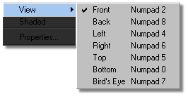

There are several preset views that may be chosen from for any given window. To choose a view, right click in any window, and select View from the list that appears. A list of views and their current shortcut keys will appear, from which you can select the one that you want.

The Bird’s Eye view is a non-ordinal view, which means that it is not aligned on any global axis (X, Y, or Z). The Bird’s Eye view is set when you do a turn, and the software remembers the last turn angle. When you select a new view, the old zoom and move settings for that view are recalled.
Related Topics:
Displaying Multiple Views